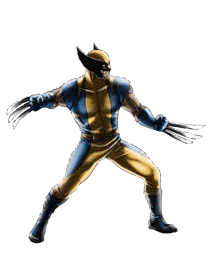

This assignment was one of the "Draw to History" assignments from the last semester. This assignment was fun to do because it allowed me to be creative. Also, being able to experience filters and tools in photoshop educated me more about the program.

I decided to make a gif using a Wolverine sprite sheet because Wolverine has always been my favorite Marvel character. At first, this assignment was a little confusing because having to piece together the layers caught me off guard at times.
This is an original gif that I made using the timeline effect on Photoshop. I made this gif by drawing many faces and adding different emotions to the purple circle. I got the inspiration for my gif because I wanted to make a gif that expresses how i feel and i decided to express it by using drawings emojis.

While completing this assignment, I learned how to shape tween. I decided to end the gif with a picture of a Shiba Inu because I love dogs and Shibas are one of my favorite breeds.

I thought an animated gif of a plane crashing into the Golden Gate Bridge would be cool. While completing this assignment, I learned that a gif is made by creating frames in the timeline section of photoshop. At first, I encountered many problems with the layers because you had to adjust the layers in order to create the frames properly. It took a while to get used to. Otherwise, this assignment was one of my favorite assigments of this semester.
For the bouncing ball assignment, I decided to create an animation of a volleyball bouncing. Throughout this assignment, I learned how to create keyframes and move an object around on and off the stage. I also learned how to use the stroke & fill tool, oval tool, and how to transform my object into a symbol.